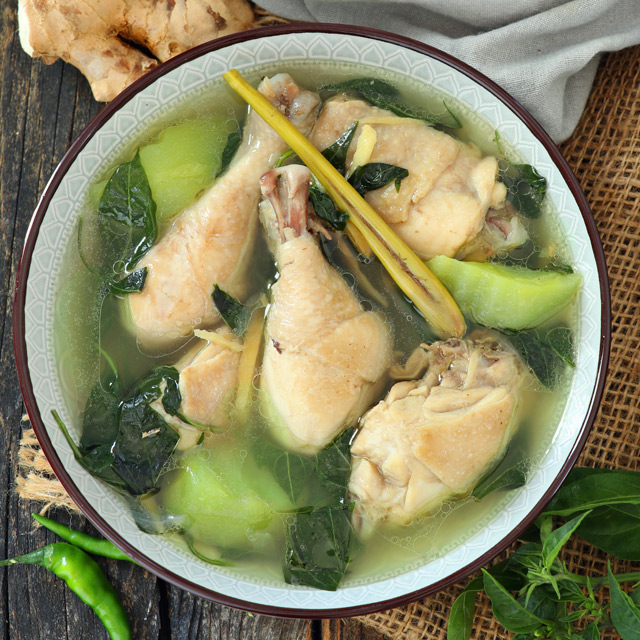

Tinola Recipe

Chicken Tinola
Tinolang manok is a staple in Filipino homes. It is a warm Filipino ginger soup made by sautéing chicken with garlic, oinion and fresh ginger then simmering it in a flavorful broth.
Ingredients
- 1 Tablespoon Cooking Oil
- 1 Piece Small Onion (Chopped)
- 2 Cloves Garlic (Chopped)
- 1 Piece Ginger (Cut into Strips)
- Chicken (Cut into Pieces)
- 4 Cups Water
- 2 Pieces Knorr Chicken Cubes
- 1 Piece Sayote or Papaya (Sliced)
- 2 Stalks Malunggay (Optional)
Back to Homepage